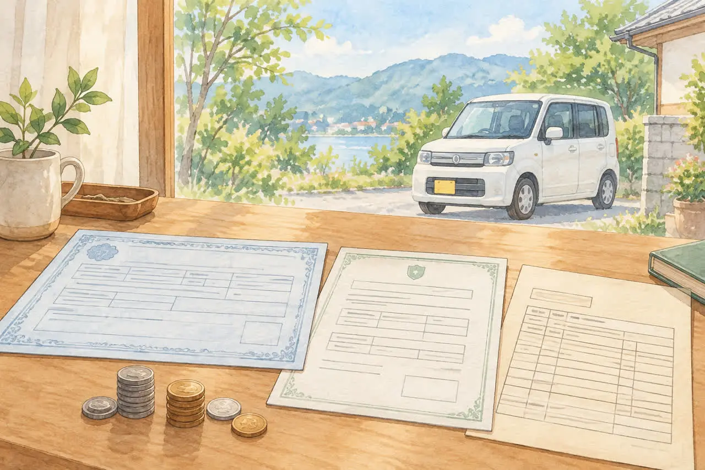
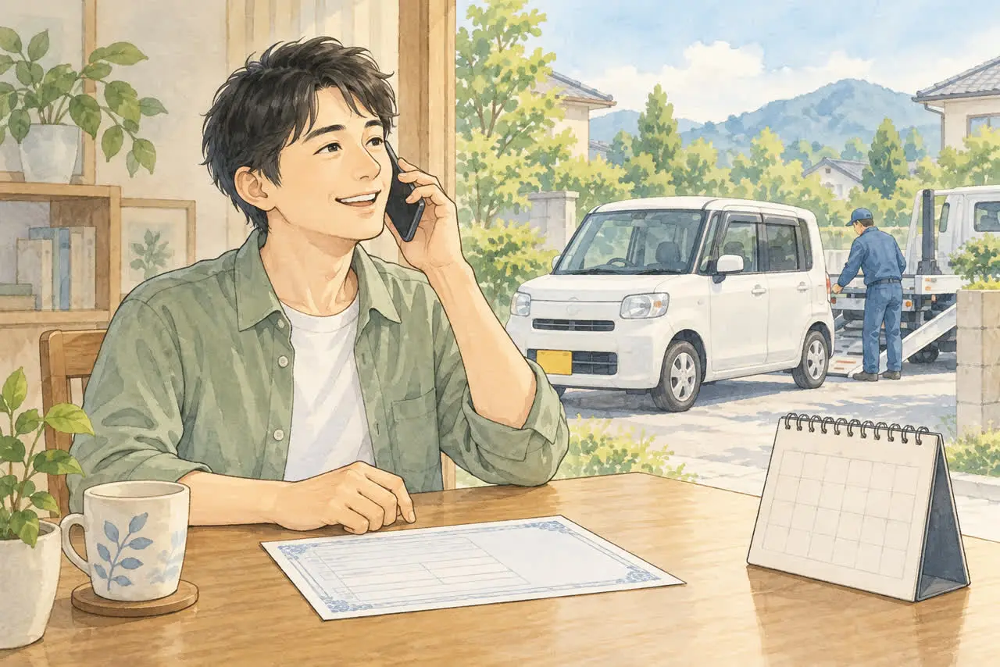

軽自動車の税金が気になる方へ
軽自動車は自動車税の還付がない？
普通車との違いと、損しない廃車のタイミング
公開
こんにちは、東京都足立区江北で自動車解体・廃車買取をしている「大崎商店 環七店」です。
「軽自動車は、廃車にしても自動車税が戻らないって本当？」
「普通車と何が違うの？」
「損をしないためには、いつ廃車にすればいい？」
軽自動車の廃車のご相談では、こんな「税金」についての質問を、よくいただきます。
結論からお伝えすると、軽自動車税は、年度の途中で廃車にしても、月割りで戻ってくることはありません。 一方で、重量税の還付や、自賠責保険の返戻金は、軽自動車でも条件を満たせば戻ります。
この記事では、軽自動車税の仕組みと、普通車との違い、軽自動車でも戻るお金、損をしないための廃車のタイミングを、やさしくご紹介します。後半では、足立区の大崎商店の場合もご紹介します。
① 軽自動車と普通車の「税金」の違い

毎年かかる軽自動車税は、普通車の自動車税とは別の税金です。2026年4月から、従来の「軽自動車税（種別割）」「自動車税（種別割）」は、それぞれ「軽自動車税」「自動車税」に名称が変わっています。この記事は、主に四輪の軽自動車の廃車について説明します。
| 比較項目 | 軽自動車（軽自動車税） | 普通車（自動車税） |
|---|---|---|
| 課税する自治体 | 市区町村 | 都道府県（東京都は、都税） |
| 基準になる日 | 毎年4月1日 | 毎年4月1日 |
| 年度の途中で廃車すると | 月割りでの還付はありません | 抹消登録の翌月から年度末まで減額され、納付済みなら還付対象になります |
| 4月2日以降に廃車すると | その年度の全額を納める | 抹消登録の翌月以降の分が減額され、納付済みなら還付対象になる |
大きな違いは、年度の途中で廃車にしたときの扱いです。
② なぜ、軽自動車は還付がないの？
軽自動車税は、毎年4月1日（賦課期日）の時点で、車を所有している方に、1年分がかかる税金です。そして、月割りや日割りで計算する制度がありません。
そのため、次のようになります。
- 4月1日の時点で車を所有していれば、その年度の1年分の税金がかかります
- 4月2日以降に廃車にしても、税金は戻りません
- 逆に、3月中に廃車の手続きを終えて、4月1日の時点で車を所有していなければ、その年度の税金はかかりません
足立区の公式案内では、軽自動車税の納税通知書は、毎年5月ごろに届き、納期限は原則5月31日です（休日の場合は、その後の休日でない日）。4月2日以降に廃車にした場合も、全額を納める必要があると案内されています。※時期や納期は、お住まいの市区町村によって異なる場合があります。
③ たとえば、こんな場合は？
| 廃車の手続きが終わった日 | 4月から始まる年度の軽自動車税 |
|---|---|
| 例：2027年3月中に手続きを完了 | 2027年度分はかからない（再登録などをせず、4月1日時点で課税対象でない場合） |
| 例：2027年4月2日に手続きを完了 | 4月1日時点で所有していれば、2027年度分は全額がかかる |
「引き取ってもらった日」ではなく、廃車の手続きが終わった日で考えるのがポイントです。たとえば、3月31日に車を引き取ってもらっても、廃車の手続きが4月になった場合は、その年度の税金がかかることがあります。
年度末までに手続きを終えるための進め方（窓口の受付日、間に合わせるコツ、解体を待つと間に合わないときの対処）は、3月中に廃車した方がいい理由｜4月1日の自動車税と、間に合わせるコツの記事で、くわしくご紹介します。
④ 軽自動車でも、戻るお金はあります

軽自動車税は戻りませんが、次の2つは、軽自動車でも、条件を満たせば戻ります。
自動車重量税の還付
軽自動車にも重量税があります。自動車リサイクル法に基づいて適正に解体され、制度上の車検残存期間が1か月以上ある場合などに還付対象になります。最終所有者が、解体返納または解体届出と同時に還付申請をします。先に一時使用中止をしている車は、その後の解体届出時に申請します。一時使用中止だけでは重量税は戻りません。
引き取り日に車検が1か月残っているだけで、還付が確定するわけではありません。 残存期間は、車検証の返納等や引取報告に関する日付を基に計算されます。車検切れでも、先に返納等を済ませている場合は扱いが異なるため、依頼先へ確認してください。還付申請を忘れて手続きだけ終えると、後から申請できないため注意が必要です。詳しくは軽自動車検査協会の案内をご覧ください。
自賠責保険の返戻金
廃車にしても、自賠責保険は、自動的に解約になりません。 保険会社へ、解約の手続きをすると、残りの期間に応じて、返戻金が戻ります。解約日から満期日まで、1か月以上残っている場合が返戻の対象です。車を引き取った日にさかのぼって解約されるとは限らないため、必要書類と受付日を保険会社に確認しましょう。
くわしくは、廃車にするとお金は戻ってくる？自動車税・重量税・自賠責の還付金の記事をご覧ください。
廃車の手続きの選び方（一時使用中止と解体返納）は、「軽自動車の「一時使用中止」と「解体返納」の違い」の記事をご覧ください。
⑤ 損をしないための、廃車のタイミング
次のように考えると、わかりやすくなります。
- もう乗らない車は、3月中に、廃車の手続きまで終わらせる：4月1日をまたぐと、その年度の軽自動車税がかかります
- 年度の途中で廃車にすると決めたら、早めに手続きする：税金は戻りませんが、重量税の還付や自賠責の返戻金は、対象となる残りの期間によって変わるためです。ただし、還付額だけで決めず、今後の使用予定や車の維持費も含めて考えましょう
- 車検が切れる前に、判断する：車検が残っているうちに手放すと、重量税の還付を受けられる可能性があります
年度末に間に合わせるための準備は、3月中に廃車した方がいい理由｜4月1日の自動車税と、間に合わせるコツの記事を、手続きにかかる日数は、廃車手続きはどれくらいで終わる？日数の目安と、早く終わらせるコツの記事をご覧ください。
よくある質問
Q. 軽自動車は、廃車にしても、軽自動車税は一切戻りませんか？
A. 年度の途中で廃車にしても、月割りでの還付はありません。軽自動車税には、月割り・日割りで課税や還付をする制度が、ありません。
Q. 普通車なら、還付されますか？
A. 普通車の自動車税は、抹消登録をした月の翌月から年度末までの分が減額され、納付済みなら還付対象になります。未納の税金に充当されることもあります。軽自動車とは、仕組みが異なります。
Q. 軽自動車でも、重量税や自賠責のお金は戻りますか？
A. 条件を満たせば戻ります。重量税は適正な解体、制度上の車検残存期間が1か月以上あること、解体返納・解体届出と同時の還付申請などが条件です。自賠責は、解約の手続きが必要で、解約日から満期まで1か月以上残っていることが条件です。
Q. 手続きが終わったことは、どうやって確認できますか？
A. 手続きの完了の確認方法は、依頼先によって異なります。依頼するときに、確認書類の受け取り方法を、聞いておきましょう。
大崎商店の場合：軽自動車の廃車
ここからは、足立区の大崎商店の場合をご紹介します。

軽自動車の引き取り・買取も、お受けしています。3月末までに廃車の手続きを終わらせたいなど、期限がある場合は、お電話の際に、最初にお伝えください。 間に合うかどうか、見通しを確認できます。
軽自動車の手続きは、軽自動車検査協会で行います。手続きの日数は、車の状態や書類によって変わります。くわしくは、廃車手続きはどれくらいで終わる？日数の目安と、早く終わらせるコツの記事をご覧ください。
お電話の際は、次の内容をお伝えください。
- 車検証（または自動車検査証記録事項）の内容と、車検の期限
- 自賠責保険の満期がわかれば、その日
- 車種・車の状態・車が置いてある場所
- 「いつまでに終わらせたい」という、ご希望の期限
軽自動車に必要な書類は、軽自動車の廃車に必要な書類・準備チェックリストの記事にまとめています。
当店は、車の引き取り・買取に伴う廃車手続きを行っています。車をお預かりせず、書類手続きだけを代行する依頼は受け付けていません。
重量税の還付金・自賠責の返戻金は、合意のうえ買取価格に含め、当店が受領手続きを行うことが多くあります。買取価格に含まれる金額と受取先、必要な委任・保険解約等の書類を事前に確認します。ご自身で申請を希望される場合も、先にご相談ください。
大崎商店では、
- 解体費用・手続き代行費用・印紙代は別請求しません
- 買取価格がつかない車も、環七店から片道約30分圏内は引き取り無料
- 買取価格がつく車は、圏外でも、所在地と車の状態によっては無料で引き取り（事前にご案内します）
- 車のお持ち込みは、どこからでも歓迎（基本は環七店。日時は、事前にお電話でご相談ください）
軽自動車の廃車のことも、大崎商店にご相談ください
電話で相談する 03-3854-4141メールで相談する（フォーム）ご来店の前に、お電話ください。引き取りなどで外出していることもあり、お電話いただければ、受け入れの可否や、ご案内できる日時をお伝えできます。
大崎商店 環七店
電話：03-3854-4141
〒123-0872
東京都足立区江北7丁目1−3
営業時間：月〜土 10:00〜18:00
休業日：日曜・祝日
環七沿い／舎人ライナー
西新井大師西駅
大崎商店 入谷店
電話：03-3899-2837
〒121-0836
東京都足立区入谷7丁目5−11
営業時間：月〜土 9:30〜17:30
休業日：日曜・祝日・第2土曜
引き取りやご相談のお電話は、環七店がスムーズです。お電話の際は、「軽自動車の廃車と税金について」とお伝えください。車検証（または自動車検査証記録事項）をお手元にご用意いただくと、ご案内がスムーズです。
※掲載のイラストはAIで作成したイメージです。実際の店舗・役所の窓口を撮影したものではありません。
参考：兵庫県・2026年4月の税名称変更／損保ジャパン・自賠責保険の解約返戻金／足立区・軽自動車税／総務省・地方税制度 自動車税・軽自動車税／東京都主税局・自動車税のよくある質問／国税庁・自動車重量税の廃車還付制度／軽自動車検査協会・解体返納／軽自動車検査協会・東京主管事務所足立支所